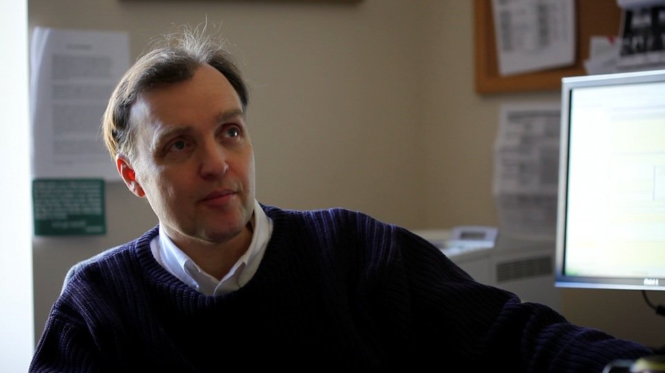

Today

As the Minneapolis City Council Member for Ward 2, Cam Gordon Chairs the Council's Elections Committee, Vice Chairs the Public Safety, Civil Rights & Health and Regulatory Energy and Environment committees, and serves on the Executive, Claims, Community Development, Rules, Taxes, and Zoning and Planning Committees. His additional appointments include the Homegrown Minneapolis Food Council, the Youth Coordinating Board, the Youth Violence Prevention Steering Committee, the University District Alliance, the Cedar Riverside Partnership, and the Red Rock Corridor Commission. He previously served on the Civilian Review Authority Work Group, the 2008 RNC Convention Free Speech Work Group (alternate) and the Community Engagement Task Force. He is the only Green-endorsed member of the council and was first elected in November 2005.
Background
Cam has lived in Minneapolis all his life and in or near the second ward since 1977 in the Cedar-Riverside, Longfellow and Seward neighborhoods. He has owned a duplex in Seward since 1991 where he lives with his family.
Cam graduated from West High School in Minneapolis in 1973 and with distinction from the University of Minnesota in 1977. After getting his Bachelor of Science degree in education, Cam went on to complete extensive graduate work in early childhood development and Montessori education. He is a writer, musician and accomplished Montessori teacher. Before being elected in 2005 he operated a small child care program and children's music company with Sarah and was Associate Editor of the nationally distributed education newspaper, Public School Montessorian. He is author of Together with Montessori, a guide to help parents and staff work together in harmony to create better schools.
Over that past 28 years he has worked in the community as a teacher, community organizer and performer as well as a reporter for the neighborhood newspaper, the Seward Profile, and editor of its West Bank Stories section.
Both professionally and as a community volunteer he has shown that he is an effective communicator, talented problem solver, excellent listener, quick learner and a proven consensus builder. He understands the issues and concerns of our City from many different perspectives.
Cam's record as a civic leader who has facilitated effective organizations and his ability to bring people together to achieve common goals is widely recognized. He is able to work effectively and cooperatively with a variety of people from different backgrounds while also maintaining his independence, holding true to his principles and never losing sight of the larger vision and ultimate goals.
His rich experience as a teacher, business owner, writer, political activist and neighborhood leader have helped him learn a great deal about the policy decisions facing our City, the values needed to guide those policies and the skills needed to manage its resources and help meet its challenges.
Civic Involvement
Neighborhood Revitalization Program (NRP) Policy Board - 2003 and 2004, served residents of Minneapolis as their elected neighborhood representative for the revitalization neighborhoods. Working with other neighborhood representatives, elected officials and community interest group representatives, as well as NRP and City staff, he helped secure funding for NRP Phase 2, keep neighborhoods in control of planning and implementation and make NRP as open and inclusive as possible.
Mayoral Ethics Task Force - June 2001-2002, appointed by Mayor R.T. Rybak, Cam worked with this group to redraft the City's Ethics Code and established an Ethics Officer within the City Attorney's Office and an independent Ethical Practices Board for the City of Minneapolis.
Candidate for City Council - 2001, he was endorsed by the Green Party, Progressive Minnesota, United Electrical Workers, Sierra Club, Clean Water Action Alliance, U of M College Green Party, Lavender Greens and the Minnesota Daily. Finished second with 48% of the vote.
Seward Neighborhood Group - Served on his neighborhood association's board from 1995 to 2001, taking one year off in 1997. Served as secretary in 1996 and as co-chair in 1999 and 2000.
Seward Neighborhood Revitalization Program (NRP) - Active in Seward's NRP from the beginning to the end of Phase I. Served as chair of Seward's NRP Implementation Oversight Committee from 1995 - 2001 where he facilitated implementation of Seward's highly successful NRP plan.
Green Party - Founding member of the Green Party of Minnesota as well as of the Minneapolis/5th District Green Party. Served on the State Coordinating Committee from 1994-96 and 2000-02. Served a as chair of the Minneapolis/5th District Green Party from 1997-2000. Served as State Party Chair in 2002.
Minneapolis Center for Neighborhoods - Board of Directors from 1997 - 2001.
Common Cause Minnesota - Board of Directors from 1997 - 2000.
Minneapolis Election Reform Coalition - Founding member supporting election reform in Minneapolis.
FairVote Minnesota - Helped start FairVote Minnesota dedicated to educating people about proportional representation, preference voting and other election reforms.
Matthews Center Activities Council and Matthews Park - Past chair of the Matthews Center Activities Council. Coach in both baseball and soccer and Volunteer of the Year for Matthews Park in 1994.
The Citizens Reform Network - Founding member 1992-94.
Professional Experience
Small Business Operator - Co-owner of River's Edge, a small business providing child care and music programs for young children from 1997 - 2005. Owned and operated World Song, 1993-97, a small business providing music entertainment, classes, summer camps and other educational experiences for children and families.
Teacher - Since 1980 in public, private, Head Start, Montessori and community education programs with students from infancy through adolescence. Past president of the Minnesota Alliance of Montessorians. Co-founder of the Minnesota Transitions School. Taught at Child Garden Montessori School (1980-84) , The College of St. Catherine Early Childhood Center (1984-1990) Northern Lights (1990-91) Seward Montessori School (1991-92) and Ramsey Action Programs Head Start (1992-94).
Administrator - Administered early childhood programs from 1984-90 while teaching at the College of St. Catherine Early Childhood Center, as well as with World Song and River's Edge.
Musician - Performed professionally with a number of bands in the Twin Cities since 1977, most notably The New Psychenauts in the late '70s and early 80s, The Swinging Combo in the mid 80s and in the 1990s with World Song.
Journalist - Associate Editor of the locally published and nationally distributed Public School Montessorian. Reporting experience (from 1992-95) for the Seward Profile and editor of its West Bank Stories section.
Author - Together With Montessori, a guide to Montessori education, published in 1993. Its second edition, published by Jola Publications, came out in 2001.
Community Organizer - 1995-96 part time outreach worker for the Seward Neighborhood Revitalization Program. Organizer, 1995-6, for the Blue Goose Housing Cooperative, and for intergenerational activities at the Seward Towers.
Education
Undergraduate - University of Minnesota, College of Education, 1977 Graduated with distinction, B. S. in Secondary Education. English major, Communications minor.
Graduate -The College of St. Catherine, Montessori Teacher Certification Program. Primary Level completed 1983, Elementary I Level completed 1992.
The College of St. Catherine, Prekindergarten Teaching Licensure Program. completed 1986.
University of Minnesota, Graduate work in pursuit of a Master of Education degree, 1987-89.